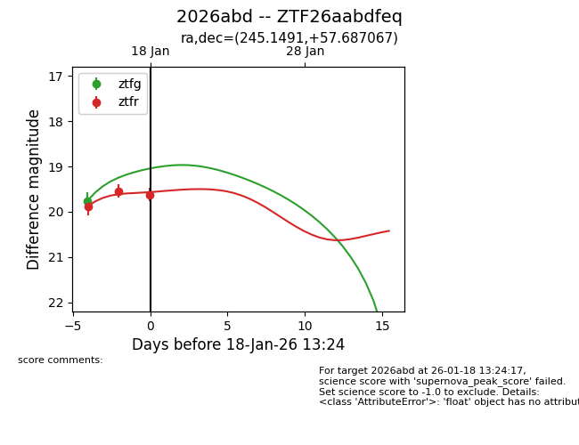
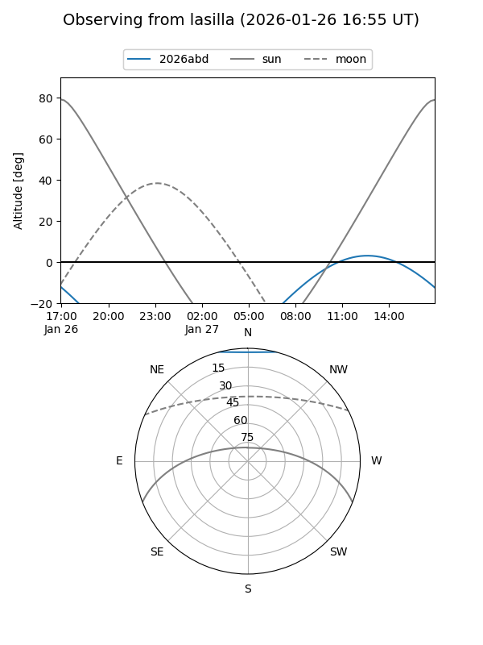
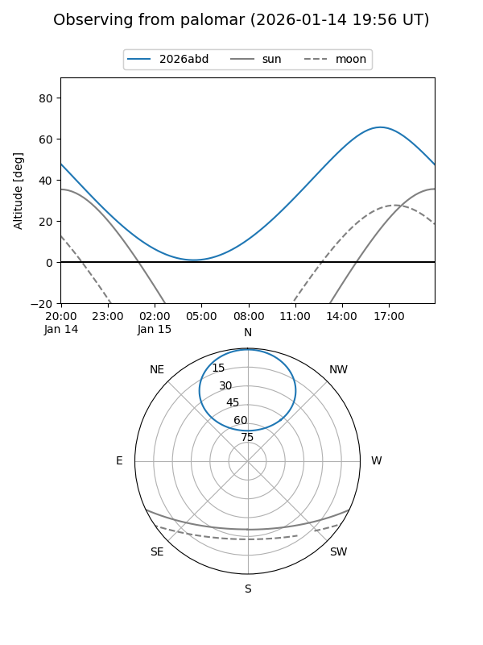
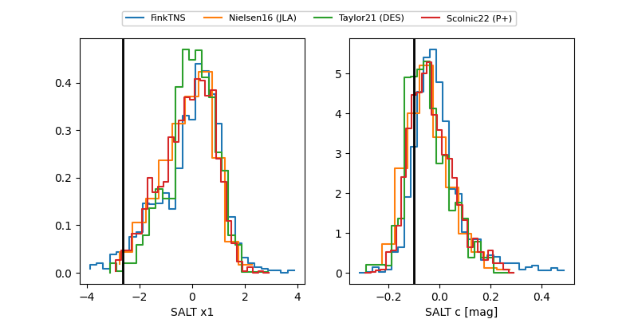

2026abd
Target 2026abd at 2026-01-26 21:31
Aliases and brokers:
FINK: link
Lasair: link
ALeRCE: link
TNS: link
YSE: link
alt names
ZTF26aabdfeq (ztf,fink_ztf)
2026abd (tns,yse)
Coordinates:
equatorial (ra, dec) = 245.1491,+57.68707
equatorial (HMS+DMS) = 16:20:35.78,+57:41:13.44
galactic (l, b) = (87.8933,+42.56024)
Flags:
Photometry:
last ztfg=19.76, ztfr=19.47
1 ztfg, 5 ztfr detections
Lightcurve

Visibility


Additional plots
